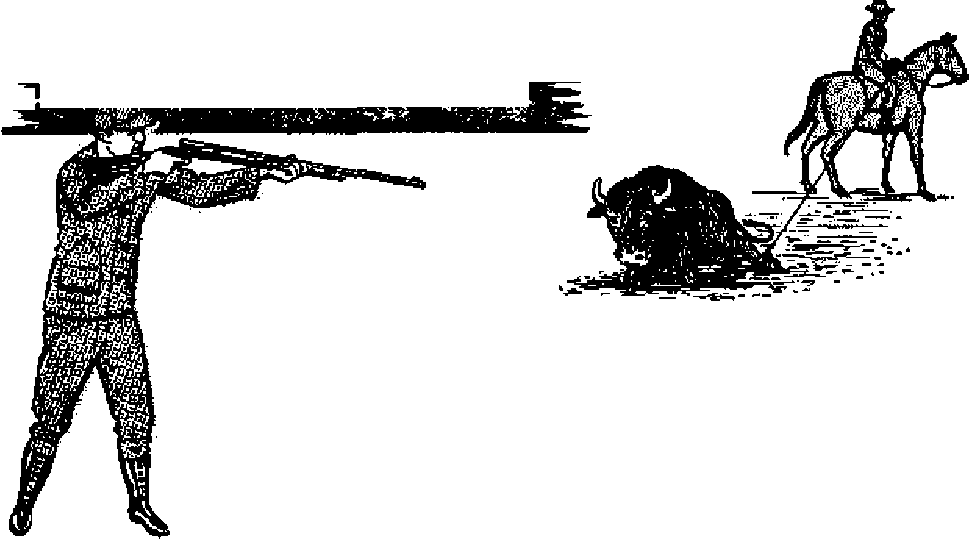

TUNE 8,1953 semimonthly
THE MISSION OF THIS JOURNAL
News sources that are able to keep you awake to the vital issues of our times must be unfettered by censorship and selfish interests. “Awake 1” has no fettexp. It recognizes facts, faces facts, is free to publish facts. It is not bound by political ambitions or obligations; it is unhampered by advertisers whose toes must not be trodden, on; it is unprejudiced by traditional creeds. This journal keeps itself free that it may speak freely to you. But it does not abuse its freedom. It maintains integrity to truth,
“Awake 1” uses the regular news channels, but is not dependent on them. Its own correspondents are on all continents, in scores of nations. From the four corners of the earth their uncenaored, on-the-scenes reports come to you through these columns. This journal's viewpoint is not narrow, but is international. It is read in many nations, in many languages, by persons of all ages. Through its pages many fields of knowledge pass in review—government, commerce, religion, history, geography, science, social conditions, natural wonders—why, its coverage is as broad as the earth and as high as the heavensi
“Awake I*’ pledges itself to righteous principles, to exposing hidden foes and subtle dangers, to championing freedom for all, to comforting mourners and strengthening those disneartened by the failures of a delinquent world, reflecting sure hope for the establishment of a righteous New World.
Get acquainted with “Awakef” Keep awake by reading “Awa k el”
FCTBLrlSHED SEMIMONTHLY By
WATCH TO WEH HIDLE AND TRACT SOCIETY. INC.
117 Adama Street Brooklyn 1, N, Y_, U. S. A.
N. H. Knobb, President Grant ScjiEa, Secretary
Printing this Issue: 1^000,000
LmguiDt: in whl«li Uh matulnt h publishes: Semimonthly—Afrikaans, English, Finnish. French, German, Hnlhntii^h, Norwegian, Spanish, Swedish, Monthly—-Danish. Greek, Purtugueae, Ukrainian.
tlfficcs Yearly iulwcripiiew Bate
Artriea, D,$L, 117 Adam St, BrwJfJyn 1. N.Y. Si Antra lit, 11 Bereafnnj Rd., Rtrafrifield, N.S.W. 8s Canada., 40 Irwin Ave., Toronto 5, Ontario $ 1 England, 34 Craren Terras, London, W- 3 7a Sortte Africa, Private Baa, P.O, ElandBfgntein.
Tranfejaal fa
Entered as jcctmd-clasis matter at BrooMyrij N. Y
Fivfr cents a copy
RemltUhtec should bo sent to office in ytrnr country tn compliance with regulations to guarantee sfifn delivery of money. llemiltfUiees ar; accepted at Brook Lyn from countries where no office la located, by J litem atiiinal money order only, Subscription rates In different countries are here stated in Jnerti currency. Notice ol expiration f with renewal blank) is genl at least two issues before subscription expires. Change of address when sent to our office may irn expected effect,ire within one month. Bend your i»d as well as new address.
Art at March 5. im. Wttirf ia U. & A
CONTENTS
Charlie Chaplin and the American Legion 12 What a Way to Ruin the Taxpayers!
Our Dialects South of Luzon
Airplane Conquers Last Great Ocean 23
How to Get Around in New York 24 “Your Word Is Truth”
Jehovah’s Witnesses Preach
£/ “Now it is high time to awake.'—Romans 13:11 &
Volume XXXlV Brooklyn, N. V., Juna 0, 1953 Number 11
The Memory of God
AT THE dedication of Mount Palomar
Observatory the official program’s final page was emblazoned with these words: ‘'When I consider thy heavens, the work of thy fingers, the moon and the stars, which thou hast ordained; what is man, that thou art mindful of him?'* (Psalm 8:3, 4) Fitting words those! For, truly, the telescopes of that observatory were to enlighten the reverential man by giving him a richer appreciation of the psalmist’s words. And with the enhancing of that appreciation come facts, too, that cause man to marvel at the memory of God.
But how do telescopes amplify this appreciation of God’s memory? Because the inspired Word says concerning the Almighty God: “He counteth the number of the stars; he caileth them all by their names.” (Psalm 147:4, Am. Stan. Fer.) God not only determines the number of stars, but he gives each a name and remembers it! Man, with the most powerful telescopes, has not been able to count the number o£ stars. But he has gained a clearer insight as to the incalculable myriads that do exist.
Man has learned that our sun is just a star like thousands of others visible to the naked eye at night. The Milky Way, which to us is like a band of light across the heavens, is really a gigantic aggregation of stars. Our sun, astronomers discovered, is only one of perhaps 200 billion stars that make up the Milky Way Galaxy —our home in space.
But that is not all: there are other galaxies. How many? Well, as telescopes were improved, jt was next discovered that our Milky Way Galaxy is but one of “hundreds of millions of similar aggregations of stars". (National Geographic Magazine, February, 1952) And how many stars to each of these “hundreds of millions” of galaxies? In answer, note a striking sentence from the National Geographic Magazine, issue of September, 1950: “Each one of these galaxies is an isolated island in the Universe, containing hundreds of millions of stars."
Thus there exist, according to man's limited knowledge, “hundreds of millions” of galaxies, with most galaxies containing “hundreds of millions of stars”! The aggregate number of stars, if it were possible to count them, would be a dazzling figure indeed!
Galaxies vary in size. Some are dwarfs containing only a few million stars. Others are immeasurably expansive. Jehovah also gave variety to the stars individually. There are small yellow stars like our sun that dot the universe. Space is densely populated with giant blue and red stars, some so mammoth in size that if centered on our sun they would envelop the earth in their tremendously enormous interiors! Yet, whether dwarf star or gargantuan star, Jehovah God, who hung them in space, “calleth them all by their names,” Consequently, such infinite wisdom could only mean that Jehovah’s memory is indescribably retentive and tenacious.
Is it too incomprehensible that God’s memory is everlasting? No, already man has created robot brains with an uncanny memory. Nothing incomprehensible about that! And man himself, with his imperfect brain, can suddenly recall an event that lay dormant in his mind for years. Then what must God’s memory be like!
In view of God’s omniscience and everlasting memory, will the wicked men who turn this earth into a hotbed of misery, corruption and war really escape detection and punishment by God? They may think so, but what a colossal mistake! “Is not God high in heaven? Does he not look down on the topmost star? And yet you say, *God never notices! Can he rule through the darkness dense? He moves on the high vault of heaven; he cannot see us for the clouds that veil him? Is that the line you choose, the line that evil men took long ago? They came to an untimely end; when the floods undermined them, good men rejoiced to see their fate.”—Job 22:12-19, Moffatt trans.
Today we hear that same view: “What can the Almighty do to us?”—as though God confines his sight and memory to the vaults of the exalted regions and cares nothing for the inhabitants of the earth! Evil men in Noah’s day took that view, but they came to a disastrous end when the flood engulfed theni. Though Jehovah looks “down on the topmost star”, the evil world today thinks he sees not, and if he does see, he does not remember. For such oblivious-of-God reasoning they will come to a catastrophic end at Armageddon. And those' who love and serve God will rejoice at the fate of the wicked ones.
God’s memory, then, is powerfully strong for those who love him, “And Je
d
hovah hearkened, and heard, and a book of remembrance was written before him, for them that feared Jehovah, and that thought upon his name.” (Malachi 3:16, Am. Stan. Ver.) Those that now use their mind to think upon the name of the great Creator of the starry heavens, Jehovah, are thus assured of being remembered by him. Jehovah never forgets his people: “Can a woman forget her infant, forget to pity her babe? Yet even were a mother to forget, never will I forget you.”—Isaiah 49:15, Moffatt trans.
The fact that Jehovah cannot forget his people illuminates the Bible doctrine of the resurrection. It is not too deep for us to fathom. Why, it is said that earth’s population that have died to date number only little more than 20 billion; yet the myriads of stars in the Milky Way Galaxy alone number 200 billion, and Jehovah “calleth them all by name”. Clearly, when Jesus said that “all those in the memorial tombs will hear his voice and come out”, he knew what he was talking about!—John 5: 28, 29, New World Trans.
Right now Jehovah’s eyes see. “The eyes of Jehovah run to and fro throughout the whole earth, to show himself strong in the behalf of them whose heart is perfect toward him.” (2 Chronicles 16:9, Am. Stan. Ver.) And what Jehovah sees he remembers. At Armageddon Jehovah will show himself strong in the behalf of those whose heart has been perfect toward him, by allowing them to survive into a new world of abiding righteousness. That new world will mean not only everlasting life and happiness for righteous man, but also a perfect memory. Then man, with all eternity ahead of him, will be able to learn the things and study the things he has always wanted to, and remember them also. To be found favorably in the memory of God, that is real security!
a w a K E!
By “Awak«!M correspondent In Canada
DURING one period of earth's cataclysmic past it appears that a very strange class of creatures were the dominant order of life. Due to certain common characteristics these animals have been classified by paleontologists as Dinosauvia, from the Greek terms deinos, meaning “terrible", and sauros, meaning “lizard”. The fossilized remains of these creatures have been rock formations 90 to 400 feet below the normal land surface of the surrounding country. These formations have been exposed in the badland topography of the Red Deer River Valley due to rapid erosion by water in recent geological times.
In these formations a veritable “book of nature” has been opened to the view of modern man that accurately portrays the
found in many different lands. However, life and habits of the dinosaurs. Some of
the most extensive “bone beds” from which these animals lived entirely in water, oth-
dinosaur remains have been taken and re-articulated for the museums of the world are located on the North American continent. It is from these “bone beds” that scientists have been able to learn much concerning the history of life on earth prior to man’s entrance upon the scene.
One of the most important “bone beds" is centered in the Red Deer River Valley in Alberta, Canada, close to the city of Drumheller. From this area alone some sixty distinct species of the “terrible lizards” have been identified and over thirty complete skeletons shipped to various museums and universities. Many specimens of silicified fruit and fossilized plant fragments have been collected from this same area, indicating the type of flora that coexisted with these strange animals. The fossils are found in
ers made the dry land their natural habitat, while still others took to the air. Some weighed as much as 38 tons and were 80 feet long. Some were carnivorous, while others were completely vegetarian, and very likely tucked away a tasty meal of around 1,000 pounds of plants every day. One type of dinosaur had a head one third the length of its body. Another type of dinosaur had long spiny projections from its backbone some two to three feet in length, possibly to support a membranous “sail". All lizards had one common characteristic, namely, small brain capacity—less than one-half pound of brain for every ton of body weight, as contrasting with man's two pounds for every hundred pounds of body weight. Although the story written in the rocks concerning the dinosaurs is fairly complete, we may be sure that there are yet other missing pages to be unearthed.
Meet Corythosaurus, the whole ton and a half of him! He belongs to the family of plant eaters called duck-billed dinosaurs. This family is so called because of a beak like that of a duck and is most common in Canadian collections However, Corythosaurus differs from the ordinary run of the duckbills due to an extraordinary bony structure on the top of his skull resembling an old Corinthian helmet (hence the name). This animal attained a length of slightly under 29 feet and stood 10 feet high at the hips. When reaching for a tasty twig on some tree he could raise his head 16 to 18 feet above the ground. These creatures apparently fed on vegetation that contained a great deal of sand, because skeletons give indications of the rapid wearing down of their teeth. Nevertheless, when this occurred the animal was not forced to go on a liquid diet, because his teeth were adapted to rapid wear by being in continuous series, always pushing to the surface of the jaws. In fact, in this particular specimen were found between 1,000 and 1,500 teeth arranged in such manner that as one set wore away and fell* out another was right there to take its place. The jaws came together in a shearing motion, which would strongly indicate thorough rending of the food before swallowing. He was apparently adapted to a semiaquatic life and could go under water to feed and to escape from carnivorous enemies. Skin impressions found in the rocks show that his feet were webbed and that he was a rather thinskinned animal covered with small tubercles. This specimen, discovered near Sand Creek on the Red Deer river by Dr. G, F. Sternberg, is now on display in the Geology Museum of the University of Alberta.
Another interesting denizen of that long-ago world was called the homed dinosaur, or, as a class, Ceratopsia, His name makes it appear that he was rather a rough individual to get mixed up with, but it seems that his armament was purely defensive. This is the species whose head was one third of the body length. The massive, head was nearly all bone, having a great bony shield extending from the top of his big, parrotlike beak right back over his shoulders and neck. In one type of Ceta-tops, this bony frill had spines projecting from its outer edges. Near his nose he had a small horn similar to that on our presentday rhinoceros, and over each eye he had a massive horn that was directed forward. These plant eaters sometimes reached a length of 25 feet and stood 8 feet in height. From the tremendous size of the head it is concluded that his food supply was close to the ground. The first dinosaur eggs ever found belonged to this type,
Tyrannojsauros rex scientists have named “king of the tyrant dinosaurs”. He measured from 47 to 50 feet in over-all length, and when standing on his hind legs his head reached anywhere from 18 to 20 feet above the ground. Having a body the size of the largest elephant known today he must have weighed anywhere from 8 to 10 tons. His front limbs were so small as to be almost useless as an aid to locomotion, though they were armed with cruel curved claws. His hind legs were very powerful and no doubt enabled him to move at a rapid rate over the ground using his powerful tail as a balance, in the kangaroo fashion. He was definitely carnivorous, His skull is four feet three inches long, three feet four inches deep, and two feet nine inches wide. His jaws were set with curved double-edged teeth ranging in size from three to six inches in length and about one inch thick. His jaws were his most powerful weapons.
Another type of the “lizard clan” that apparently existed contemporaneously with those already described made its home entirely in the sea. It has been named ichthyosaur, from the Greek word ichthys> meaning “fish”. The reason for this is that the animal had all the appear-
ances of a fish and yet its anatomical structure reveals the characteristic heart, lungs, brain and bone structure of the reptile. They had four paddles similar to the fins of a fish and a flexible body with a large fleshy dorsal fin on their back, and a large two-lobed tail. Hie skull of this creature was elongated by two long jaws that were studded with a large number of relatively small sharp teeth, no doubt designed for catching fish. Its young evidently were hatched from eggs retained inside the body of the female. A specimen in the American Museum of Natural History, New York, contains the partial skeletons of some baby ichthyosaurs within the body cavity. Specimens measuring up to thirty feet in length have been found. Skeletons of this order of reptiles have been found in many parts of the world and in large numbers, indicating that it must have been a dominant form of life in the seas of those ancient days.
A class of reptiles that should not be overlooked is called the pterosaur, from the Greek pteron, meaning “wing”. The outstanding species in this class were the pterodactyls, which term literally means “wing finger”, because the wing of this flying reptile was supported by an elongated fourth finger. These creatures were lightly built with hollow bones like birds and their wings were very similar to bats" wmgs. The thin membrane forming the wing extended from the elongated finger down to the flanks of the body and on down to the hind limbs. Some of them were quite small. They had teeth in their jaws, indicating they were carnivorous. Some types had a long outrigger to which was attached a sort of rudder. Although some attained a wingspread of twenty feet or more, the smaller ones had only two to three feet of wingspread. So far it appears that this order of reptile has not been found extensively on the American continent, but it is interesting to note that at Solenhpfen, Germany, specimens havebeen found in limestone showing distinctly the impressions of the wing membrane, having been quite evidently buried before decomposition took place.
It would be impossible to describe all the various types of dinosaurs that have been discovered by paleontologists, for up to this time we know of at least 500 types, ranging in size from very small creatures to the gigantic brontosaurus, or “thunder lizard”, measuring over eighty feet from the tip of its nose to the end of its tail. This reptile often- weighed fifty or more tons and was the possessor of the voracious appetite mentioned above. The stegosaurus, or “cover lizard”, had a heavy coat of bony armor all over its body, with peculiar vertical triangular plates in alternate positions on each side of the spine, and four sharp spikes on the end of a tail that could be used rather pointedly to remind any intruder to keep his distance. An interesting feature of this reptile was its two “brains”, one in the head weighing approximately 2.5 ounces and another in the sacra] region of the spinal column twenty times the size of the first and doubtless used to control all the creature’s instinctive and reflex actions. The animal was not a quick thinker; its protection was its heavy armor.
Apparently these creatures lived when one climate prevailed all over the earth. In his book The New Geology, George McReady Price, professor of geology, at Union College, Nebraska, makes the following interesting statement on page 652> “There is but one climate known to the ancient fossil world, as revealed by the plants and animals entombed in the rocks; and that climate was a mantle of springlike loveliness which seems to have prevailed continuously over the whole globe/ Just how the world could have been thus
warmed ail over may be a matter of conjecture; that it was so warmed effectively and continuously is a matter of fact;” Under this climate these huge lizards likely lived to a ripe old age, and this is indicated by the following quotation from page 528 of the same authority: "Unlike man ano the higher vertebrates, reptiles and fishes . . . continue to grow throughout life, so that the size of a turtle, a crocodile, or a dinosaur tells something of the duration of its life. Jftortoisesjnfty attain an age of several nunSreaTyears, why should not
The book The Days of Creation by Wiley Ley (Modem Age Books, New York) tells about the skeletons of the Iguanodon found in Belgium and says concerning their destruction:/“The Iguanodons had drowned wholesale, probably all of them together.the Alberta Research Council Report No. 34, on pages 66 and 67, there is a description of the Pale beds of the Belly River series of rocks in which the dinosaur remains have been found in the Red Deer River Valley, and after showing that these beds are nonmarine in their
a dinosaur grow to be much older?” origin, it states: ‘At the close of the Belly
How They Perished
As to the manner in which this interesting order of creatures passed out of existence, it is wdrth noting that evolutionists claim gradual changes took place slowly and inexorably over millions of years (basing their conclusions on the theory of uniformitarianism of Lyell), which changes in climate and topography finally made it impossible for the dinosaurs to live. Compare this sectarian theory with the findings of men whose minds have noLbeen blinded by the religion of evolutioiy^One of the most inexplicable of events,” says Professor Lull^ referring to the dinosaurs, “is the dramatic extinction of this_mightyraceJ* “The cutting off of this giant dinosaur dynasty was nearly if not quite simultaneous the ^Ur^GLQypr/> says Dr. w/C/Matthew. —The New Geology, page 533.
River time, the -land surface was,sub-, mexged^and {he^a/cgyerecTtnis_part of Alberta?^nSresHngalsoarethew6rc(s of De La Beche, first director of British
Geological Survey in his “Geological Researches”, on page 265: “A very large proportion of them must have been entombed uninjured, and many alive, or iFnotTalive, at least before decomposition ensued.” Professor Price concurs in this by saying ip his book The New Geology, page 657<“The great general fact is that we have a whole fossil world on our hands Jburi edby moving water; and this is the one prime and essential fact with which we have to deal in interpreting the long past history of our €lobe.”
Regardless of the manner of their death, the dinosaurs were a magnificent race of creatures, created according to the good purposes of Almighty God.
Attention, God Speaking/
The long-accepted "divine right of kings'' wanes, but the political idea that your particular government, no matter how corrupt, is from God Almighty remains to this veiy day. Witness this example from the Chaplain’s column in the Dolphin, publication of the United States Submarine Base at New London, Connecticut:
"By what authority do petty officers, chief petty officers, and officers demand your obedience? . . . This authority comes to them in a long, long chain of command that reaches back to God himself. . . . Knowing that all authority comes from the Supreme Being makes your military obedience easier. Your superior is God's rep
resentative, even if he doesn’t know it nor believe it/'
T?
Hj his soul dreams
a challenging citadel somewhere high on a mountaintop. This is your invitation to do just that: to explore the lofty citadel on the island of Haiti, where, in the early 1800’s, Henri Christophe erected an intriguing fortress, the pattern of which belongs to no era, to no country.
Henri Christophe was made president of northern Haiti in 1807, and he built the country into a kingdom that, during its brief span of life, ranked, in the opinion of Europe, with the most forceful of the new-world powers. Finding his powers restricted, Christophe proclaimed himself king.
This black king of Haiti expended all his efforts to rival the kings of the whites. He governed the land with an iron hand. His country was free, and to maintain that freedom he decided to build an impregnable fortress to shelter himself and his army, should an invader ever attempt to conquer his realm. But perhaps the sterling motive for the building of this grandiose fortress might lie in these words of Christophe to an English admiral: “If we could lay our hands on things we've made, monuments and towers and palaces, we might find our strength. While I live I shall try to build that pride we need, and build in terms white men as well as black
can understand. I will teach pride If my teaching breaks every back in my kingdom.”
Work was mandatory for all under the black king’s rule. ^:ile issued a decree for work from 8 a.m. until nightfall, with the state and hfs first a to build the most pretentious church 4ver built in Haiti. His pride moved him to be like the great kings of the whites even in regard to churches. In his insatiable desire for pride, he even instituted a nobility, among which were the unforgettable Count of Limonade and the Duke of Marmelade. Both titles were taken from names of important townships that had been named long before by the facetious French.
The site chosen for the citadel was a whole mountaintop; there was no room for anything else. No finer vantage point from which to sweep surrounding country by artillery fire could be chosen by a general. As the construction of the citadel progressed, ten thousand men were continuously employed, with old men, women and children carrying sand and mortar to help the workers complete a stronghold. It is estimated that the citadel contains nearly half a million tons of building material, every pound of which had to be carried up the precipitous side of the mountain, more than two thousand feet above the plain.
Twenty Thousand Perish
Christophe strained every resource of his tiny kingdom and worked his subjects without mercy. The king was a man of huge size and gigantic physical strength.
Often he would take trowel and mortar and work on the walls of the eitadel himself* Always the king drove his workmen. Twenty thousand, it is said, died of hardship and exhaustion, but the king sent his overseers for fresh drafts of peasants* and the work continued without pause.
Inside the citadel were an arsenal, storehouse for supplies and barracks that could accommodate ten thousand troops, as well as a small palace. The sides of the hill on which the fortress was built were smoothed away so that they could be* commanded in all directions by artillery fire. Batteries of the heaviest cannon of Christophe's day were installed in casemates, or shellproof vaults, that commanded all approaches. They are still in position today. The largest cannon is eleven feet six inches long, firing six-inch cannon balls, and is dated 1786, It is made of bronze.
It seems difficult to believe that these huge guns could be dragged to the summit of the mountain by man power alone. Doubtless legend and fact mingle in stories about this, as well as in accounts of his other exploits. A typical story of King Henri explains how the cannons were raised. Christophe had assigned a hundred men the task of transporting one of these monster cannons up the zigzag roadway in a working day. At noon, while inspecting the work, he noted that they had made little progress.
“Sire/' said a leader of the group, “the task you have given us is beyond our strength. We can’t possibly move this heavy cannon the distance you have required of us.”
“That is too bad,” replied the king. “I am very sorry. What I have to do grieves me immensely, but the king’s word is sacred. I have said that you must take this
gun to the top of the mountain and I am " king’s idea, sure you can do so. If you do not think so,
I must find some way to stimulate you. I think I can find a way.’*
Saying this, the king ordered his executioners to select fifty of the one hundred men and prut them to death. The remaining fifty took the cannon to the top of the mountain and placed it in position well ahead of the scheduled time.
Once Christophe, standing on the walls of the citadel, looked through his telescope and saw a Negro farmer more than a mile away in a valley far below him, lying sound asleep by the door of his mud-walled cottage. The king's lips drew back from his teeth in a snarl of sudden, senseless rage, for he knew the man and had previously reprimanded him for idling during the stipulated hours for everyone in the kingdom to work. Quickly the king called for a captain of artillery. Together they went into the gallery where the huge bronze cannons were ranged behind their little windows in the wall. The young captain took aim. Henri lit the fuse and the morning quiet was shattered by the resounding roar of the explosion. But the man asleep in the sun did not hear. The hurtling cannon ball, superbly aimed, smashed him and his mud hut together.
Forward March!
The wall of the castle flanking the space used as a drill ground is a continuation of a sheer cliff. Here the vertical drop is more than 200 feet. Legend says that Christophe, having heard of the iron discipline of the Prussian soldiers of Frederick the Great, resolved to drill regiments of Haitian soldiers that would outdo those famous grenadiers. When he had trained a regiment to his liking, he would form it facing this 200-foot drop and give the command “Forward march!” If they were properly disciplined, according to the the soldiers would march off into space, file after file, until they re-
ceived the command to halt from the royal lips.
Should any soldiers fail to march off the cliff at his command, Christophe had ways of making them wish they had done so. After all, perfectly trained troops were part of the country’s program for building up its pride!
Pride Goes Before Destruction
But trouble was brewing for the black king. The country began to seethe with revolt. One of the king’s most powerful leaders was already conspiring against him. In August of 1820 King Henri went to the town of Limonade to attend mass. Never before in anyone's memory had Henri gone to mass. This was indeed strange, but something stranger was yet to happen. Suddenly, while attending mass, the king suffered a paralytic stroke. The king of Haiti was paralyzed from the waist down! News of the serious illness of the king spread like wildfire throughout the North.
A revolt at Cap Henri took place and rebels advanced on his royal palace. Christophe, with his indomitable courage, made one last endeavor to overcome his malady. He attempted to mount his horse in order personally to take command of the still loyal household troops, but fell on his face in the mud and was carried back to his palace, where, learning that the household guards had Joined the insurgents, he pro* ceeded to retire to his private apartment. The looting rebels were already in the palace. A great crash of broken glass was heard. “They are breaking even the mirrors that have imaged me!” said the king aloud. He clenched his right fist and raised his left hand, which held a pistol, to his temple. A shot reverberated, followed by sudden quiet. The king was dead. It is said he put a golden bullet, molded long ago, through his brain, believing that it alone had power to cause his death.
The Citadel of Christophe is said to be the most impressive structure ever executed by black hands in all the world and has been declared one of the marvels of the Western Hemisphere. Today it still stands, larger and more massive than the Tower of London, straddling a mountain peak 3,000 feet above the sea. His citadel is a fortress that even from the sea twenty miles away looms in majestic silhouette against the sky.
Tourists visiting Haiti today usually endeavor to see the citadel. It is about eight hours by car from Port-au-Prince. The tourist rides up to the citadel—a sevenmile, two-hour trek- by pony. It is a tough ride, but the view is spectacular.
King Christophe once boasted: “Haiti will be great, strong, rich, proud—so proud it will last forever! Then the blacks will not forget the name of Christophe” What a pathetic case of swollen pride! His proudness was his ruin. His citadel was never needed. It was never occupied. The dreaded French invasion did not materialize, and its builder gained nothing from the money and lives sacrificed except personal satisfaction for his abnormal egotism.
Christophe's citadel proved to be a colossal tombstone and a monument to the destructiveness of pride. How unquestionably true are the words of the Bible: “Pride goeth before destruction^ and an haughty spirit before a fall"!—Proverbs 16:18.
Charlie Chaplin and the Ameren Legion
Newspapers throughout the united States have reported a growing encroachment on American freedom of expression, although many persons probably did not realize it when they read the article. It was in the form of reports on the American Legion's attempts to ban Charles Chaplin’s motion picture “Limelight” from American audiences. Apparently, the Legion’s ban succeeded only sporadically, yet the very fact that some theaters did succumb to the Legion's pressure is In effect placing a limitation through coercion on the freedom of many American citizens.
The Legion’s basis for opposing the picture is not that the film advocates any “ism”, for It is not a political picture. Thus the attack seems to be against Mr. Chaplin him-feelf. This is evidenced by a statement from the national commander t>f the American Legion, who stated that in line with the Legion's official point of view, the theaters in question are “withdrawing presentation of this film pending the outcome of the investigation by the Justice Department pertaining to the granting of a certificate of re-entry to the United States to Mr. Chaplin”. Hence the American Legion seems to have set up a type of overzealous patriotism which stigmatizes a person as being guilty until he is proved innocent!
i *3' True, Mr. Chaplin has declined to become x an American citizen. But should that in any f way affect the motion picture “Limelight”?
1 And what about some Americans in the field / of literature, art, the theater, etc., who I adopted England or countries of continental I Europe as their second home and in some k cases become naturalized citizens? There I was no big outcry about that nor were \ they maligned. Who is being un-American jP then? The New York Times recently described ¥ as “un-American” the attempts of the Ameri-। can Legion to prevent West Coast theaters jl from showing “Limelight”,
In Geneva Mr. Chaplin turned in his re-1 entry permit, April 9, with the statement: P “I have been the object of lies and vicious propaganda.... I have therefore given up my 1 residence in the United States.” From London x he had said: “Hollywood has succumbed to ( thought control and the illegal methods of ) high-pressure groups, which means the end of S the American Motion-Picture Industry and its ( world influence. I am afraid Hollywood is A going to need me long before 1 need Holly ff wood.” More likely Mr. Chaplin meant that if ' pressure groups continue their un-American / activity, certain freedoms enjoyed in America v may soon be in the museum of extinction with the dodo birds!
U.S. government waste has become standard news. U.S, News t£ World Report, January 23, dealt with another example of this waste—the slapdash spending of tax dollars by the Economic Co-operation Administration. According to it, in April, 1951, a government economist was given just two days to prepare a program for spending $15 million of ECA funds In the Philippines. Not knowing what was really needed, he whipped together a list that included items such as fertilizer that would keep, rushed it off to Washington as a “firm request” for aid, and followed this up with a private note telling the officials what he thought of such lastminute methods. The request went through, and that is how the Philippines got their $15-million economic aid for 1951. The next year there was another rush job, another complaint, and $35 million was allotted, Despite studies that were then made in the Philippines to keep from wasting this money, a top man was “raked over the coals” for not using up the entire $35 million. Requests for aid then promptly increased, estimated costs of projects rose; one was tripled. U,S. News said: “Probably ... aid is administered with as much, or more, efficiency and care in Manila as it is anywhere in the world.” But it showed that many Filipinos think it is a miserable way to run a business.
The Ancients Knew How To Dye
DYEING is one of the most ancient of technical arts. In the oldest and most authentic account of mankind’s history, detailed description of colored garments is given. Genesis chapter thirty-seven tells of Jacob presenting his beloved son Joseph with a “coat of many colours”. The book of Exodus describes the tabernacle “with ten curtains of fine twined linen, and blue, and purple, and scarlet”. Also, garments that were to be worn by Aaron were to be made of “blue, and purple, and scarlet”. The breastplate, like the work of the ephod, was “of gold, blue, and purple, and scarlet, and fine twined linen”.
In the book of Esther is given a brief description of the array of colors of the hangings in Shushan palace: “Where were white, green, and blue, hangings, fastened with cords of fine linen and purple to silver rings and pillars of marble: the beds were of gold and silver, upon a pavement of red, and blue, and white, and black, marble.” (Genesis 37:3, 23; Exodus 26:1, 31, 36; 39:1, 8; Esther 1:6) In ancient Egyptian graves dyed fabrics have been found. The Phoenicians were famed for their skill in dyeing, and, “in particular, gorgeously colored materials and carpets were made in the capital, Tyre, which were transported as highly desirable products of commerce to all parts of the ancient world.”
The dyes used in antiquity were probably at the beginning exclusively organic in nature, that is, derived from animals or plants. Primitive man discovered that certain stains that he liked lasted despite sun and rain, and he began to use these to dye his fabric. Berries, fruits, roots or plants were boiled until a concentrated color of juice was available. Various juices were mixed together to obtain different colors, and the addition of water was found tn determine the shades. The pokeweed berry made a deep reddish purple. Cherries, strawberries or red raspberries made various shades of red and pink, as do the roots and stalks of sorrel, cardinal flower, red oak and hemlock bark. A deep blue was attained from boiled blueberries. Husks from walnuts, when cooked, created a dark brown, while those of horse chestnuts made a reddish brown, Osage orange roots and bark, as well as willow leaver and marsh marigold were simmered down into a white or heavy yellow dye. From plantain leaves and roots a green dye was derived.
The dye was made by chopping the plants into fine pieces and then boiling them over a slow-burning fire for an houi or more, after which the dye was strained In colonial times dyeing was done out doors. A large iron kettle was used foi dark colors and a coppej kettle was employed foi bright colors. Mordants, sub' stances to fix or set colors were used in dyeing wool Wool was left in a mordam solution overnight and their rinsed before dyeing. This process made the dye pene trate the fibers, making cer tain dyes set permanently Often a weak solution of lye made from hardwood ashes such as those of an oak or a hickory, was used to brighten the colors.
The Purple Dye
The most renowned of all the coloring substances of history was, and still is to a great extent, purple, which was supposed to have been invented by the Phoenicians in Tyre. It stood as the symbol of wealth and distinction. In early Rome only the senators had the distinguished privilege of wearing a broad purple stripe around the opening of their tunics. The knights of honor had a narrower stripe, and in the case of the higher state and city officials, “the toga praetexta was edged with purple/’ Only the general who was victorious in battle was allowed to enter the city arrayed in a robe colored entirely in purple and interwoven with gold. During the reigns of Nero and Theodosius laws were passed allowing only the so-called “holy persons of the emperor” to carry entirely purple robes, a right that was at a later date transferred to the high dignitaries of Rome’s religious hierarchy and has survived somewhat to our day in the dress of cardinals of the Roman Catholic Church.
For several millenniums the source of the puiple dye, such as was used to dye the garments of the royalty, had been a closely guarded secret of the Phoenicians. It was not until quite recently that modern investigators were enabled from Pliny’s description to rediscover the shellfish that yielded the dye. Various species of mussels or shellfishes were used. They are classified by Pliny under the generic name “purpura”. Each of these creatures, the Purpura lapillus, the genus Murex, yielded a special kind of purple dye. The shells were broken or mashed. The juice was extracted and after having been treated with salt they were left to set, sometimes as long as a week. The salted mussels were then washed with water and cooked in a leaden vessel at a moderate temperature, produced by means of steam, for about ten days. From approximately 8,000 pounds of juice the early dyers obtained in this way about 500 pounds of residue.
The scum was removed and the liquid tested. If unsuccessful, the boiling was continued until the necessary concentration of the dye was obtained. The deeper the purple the higher the price for the dye. The deepest and darkest purple, which was made from the bulk of the juices of the mussels without any other ingredients, was developed in the necessary shade of darkness by performing the dyeing twice. Lighter hues were obtained by diluting the dyeing bath with water or urine, as well as by adding, red coloring substances, such as orchil, kermes, etc. In this way, colors ranging from violet to red were created.
Red and Blue Dyes
According to Pliny, the chief source of red was the kermes tree or its berries. Another red dye was anchusa, which was manufactured from the root of the bugloss. It is generally known among dyers of today under the name alkanet, and is an excellent dye for garments and is used also as a red cosmetic. The ancients developed a blue dye called the litmus, which, according to Theophrastus, was far more beautiful than the purple, but it was not as lasting.
The Stockholm Papyrus lists a whole series of rules and suggestions for making more lasting the rose color of the orchil dye and also of the alkanet dyes. Among the many suggestions, it recommends the use of sheep’s hair, juice from the onion, a juice extracted by boiling henbane (a coarse, hairy viscid herb), and also juice extracted from the leaves of the lemon tree, etc.
The most important black color was probably that made from the bark of the oak. Soot was another chief source for making black. It was made very much in the same way as it is today. Pitch, resin, chips from the pine, beeswax, dried remains of the grape and other substances were burned in chambers whose walls were as smooth as possible, and in many cases these walls were made of polished marble. The soot that deposited itself was scratched off. Further, bone black was also in use, and wood tar was sometimes resorted to, as well as a black derived from India, which is probably identical with today’s India ink.
The ancient dyers took great pride in their work and reveled in speaking in extravagant terms of the beauty of their dyes; they referred to them as '‘green of the myrtle”, “the color of the acorn,” “the blue of the heavens,” and similar picturesque expressions. The Encyclopedia Britannica states that “there is reason to conclude that the most brilliantly tinted garments of an Egyptian priest of Isis or Osiris, or the mantle of a Roman emperor, were poor and dull in hue compared with those within reach of a domestic servant of the present time”. It is interesting, however, to find that the ancient Egyptian architects were well aware of the durable and immutable quality of their colors. Neu-burger states that on one of the works of Neh-Fermad, which dates back close to the Flood, there is an inscription that gives information about “the manner in which the colors used by him were produced, and it contains the words: ‘Color decorations tor temples must be as eternal as the Gods themselves/ ” Neu burg er further stated that dyeing was applied either to the thread or, pernaps less often, to the finished material. Dyeing was effected either directly, by placing the materials in the dyeing solution, or by the method of so-called corrosive staining, which Pliny describes in detail as practiced among the Egyptians,
Neuburger in his book The Technical Arts and Sciences of the Ancients declared that Pliny’s description of dyes and their application can no doubt be regarded as genuine. Pliny declared that “in Egypt, garments are dyed according to a remarkable process. They are first cleaned, then soaked, not in dye, but in various substances that absorb dye; these substances do not at first show in the materials, but when the materials have been dipped Into the dyeing tun, they can be removed after being stirred about, completely dyed; and the most wonderful thing about this is that although the tun contains only one kind of dye, the materials suddenly appear dyed in ^various colors, according to the nature of the dye-absorbing substances used; and these colors are not only resistant to washing, but the materials so dyed actually wear better”.
Egyptian, Greek and Roman garments were often of considerable size, so that it required experience and skillful manipulation to treat them by milling, bleaching and dyeing, if satisfactory results, and, in particular, uniformity with regard to thickness, color, etc., were to be obtained. Despite their many handicaps the ancients had firmly established the art of dyeing in the field of technical sciences. And they are still admired for their skill and technique and are referred to as men who knew how to dye.
By “Awalwl” corrWHwmfont bi Indoimla
THE troubled year of 1952 ended in Indonesia with an army crisis that posed the most serious challenge to the new state since the transfer of sovereignty from the Dutch at the end of 1949. The crisis revolves around the defense minister and top officers.
Up until the present, Indonesia's army has been mainly a political army, an army of patriotic fighters devoted to the principles of the revolution. Many of the units of the army were guerrilla bands during the time of the military actions with the Dutch, and at the time of independence these bands were incorporated into the Teritara National Indonesia (Indonesian National Army). The plan of the defense minister was to cut the army from its present number of 200,000 to 100,000, improve the training, and make it a regular army. In this he was supported and opposed. The Socialist party supported him; many influential politicians opposed him. Hence in October two motions were introduced into parliament: one calling for reorganization of the defense ministry, and the other a change in the army command. One of these motions passed by a vote of 91-64, which virtually meant the fall of the Wilopo cabinet. < But before the cabinet had time to act a political demonstration was organized, calling for the dissolution of parliament. Some 20,000 demonstrators converged on parliament house. The participants carried slogans calling for the dissolution immediately and the holding of a general election. Some of the demonstrators forced their way into the parliament building, smashing the furniture and leaving the place a wreck. The mob surged on to the president's palace. Addressing the angry crowd, the president agreed to meet with the representatives that afternoon.
< Djakarta, the capital, was placed under ■ martial law, and the army was called out to restore order. Tanks, guns and bayonets appeared In strategic spots. A curfew was placed on the city. All must be inside by 8 p.m. Tension relaxed. It was quite some time before the general public could piece together what had really happened. Rumors continued about an attempted coup d’etat. The Indonesian Times for November 17 published the following statement by Lt Col. Warow: “We of the Seventh Military Territory . . . after hearing of an attempted coup by a number of high officers against the President and the Pant-jasila (basic principles of the Indonesian state) . ., decided to take over the command of the Seventh Military Territory ... We will surrender this command after the issues within the armed forces have been settled by the Commander-In-Chief, President Soe kamo.”
<[, It was five weeks before the government made any statement on what had happened and how it viewed the events. The echoes of the government’s statement were drowned out two days later by the announcement of Indonesia’s third military coup in six weeks. On November 26, parliament reconvened. In chairman Sartono’s opening speech he referred to the method of settling the problem (prompted, no doubt, by criticism of the government’s hesitant attitude to aet): <L “We are Easterners,” he said. “Our state is an Eastern state. Our government is an Eastern government. Our house is an Eastern house. They all encompass an Eastern spirit, an Eastern system of working, and an Eastern way of settling problems, and Eastern method which is difficult for Westerners to understand, Often the Western method is too much used in seeking solutions to our problems. If we all return to applying Eastern ways of thinking, the solution to these difficulties—to my way of thinking—will be easier.”—Indonesian Times, November 27, 1952. <L In December the government began to implement its declaration. Colonels, lieutenant colonels and chiefs of staff were being relieved, promoted and demoted. Some were pleased, others turned in resignations. The situation now seems to have settled down and the government is anxious to forget the whole affair. An all-out offensive against the dissident bands ravaging West Java was to be- ‘ gin on January 1, but the army crisis prevented this from going into effect The bands of the Darul Islam, apparently confident that strong action will not be taken at present, began marauding the villages on a wider scale than ever before.
<1 Indonesia's “headaches" merely magnify the nothingness of men, their proposals, efforts and solutions, and the universal need for the righteous rule of the kingdom of God to govern our earth as it does the heavens.
16
AWAKE!
DYEING
AT HOME
Dyeing is sidered an
ure, mainly because commercial dyeing is a little too expensive; and, at the same time, the fabric may be too good to be thrown away. So the alter
generally con-economy meas
the old-time favorites, such as indigo (blue), madder (red), woad (blue), logwood (purple) and fustic (yellow). But a good many people interested in embroidery and weaving insist that the materials be dyed with natural
native is often well worth the trouble, that is, to undertake the job of dyeing at home. In the last few years the retail sales of household dyes and tints, which usually cost about twenty-five cents or less a package, have exceeded some $8,000,000 annually.
The reason for dyeing is that fabrics usually outlast the dyes on them, with the result that clothing and many household articles look worn out before their time. It is often possible to extend the life span and usefulness of the material by dyeing or redyeing it. A blouse or a pair of gloves can be made to look new all over again with a different shade of color. The rug in the bathroom or the bedspread that is faded or threadbare in spots can become alive by a refreshing color change. Dyeing can improve the life of the cloth. Recently a chemist reported to the American Chemical "Society in Atlantic City that dyes that both color fabrics and make them water-repellent have been developed. The double-duty dyes are reported to increase the water repellency of wool “60 times and cotton 12 times’*. These new dyes are expected to make “clothes and other wool and cotton articles more durable, since they lubricate the fabric and keep moisture out”.
Natural dyes are seldom used today. Chemical dyes of recent years have proved so popular that there is little demand for dyes, valuing the colors for their richness and warmth. Whether natural dyes are used or not, the vague instructions on the dye package are often far too inadequate to ensure satisfactory results, For a few helpful hints the following is offered:
Remember when using the remarkable new foamy rug dye, which cleans and dyes rugs by a process very similar to that of a rug shampoo, that it is intended only for “old, faded wool rugs and carpets”. “Your results,” said Emily Taylor, “will be best if you use a dye shade that’s darker than the original. Use a brush and apply the dye foam with a circular motion. Vacuum the rug immediately, in one direction only, to keep the rug pile even, and let it dry thoroughly.” Before dyeing, give the rugs or carpets a thorough going-over with the vacuum. As a precaution, place wrapping paper or newspaper under the rug or carpet to keep dye stains off the floor. Miss Taylor stated that “one part of the dye” should be mixed “to three parts of very hot water, at least, 140 degrees Fahrenheit. An enamel or glass container may best be used for the dye bath. Whip the dye bath into high foam. This can easily be done with an egg beater. Then dip the brush into the foam and work the foam into the rug. The results will be delightful.
There are a number of other points to
bear in mind, especially when dyeing garments of lighter shade or woolen fabrics. Cloth can be dyed a deeper shade but not a lighter shade than the original, unless the original color is first removed. This process is called “stripping". It is best to obtain a stripping compound sold under the same trade name as the household dye. To determine the amount of dye to buy for a given job, follow the package instructions and then buy an extra package or two of the same shade. It may be possible to arrange in advance with the store to return any unused packages.
The usual combination of cost per package of dye, weight per package, does not prove a reliable guide to cost comparisons between brands. A heavier package does not necessarily dye more cloth to the same shade, since some dyes are more effective than others. When buying, endeavor to purchase a dye with fastness or permanence, though no dye is absolutely fast under all conditions. It may be fast to light or to perspiration or to washing, but not fast to all three.
Dyeing Prints and Woolens
Regarding prints, Good Housekeeping for October, 1948, states that “prints can be dyed without losing the original pattern. Two or more light or bright shades, such as light blue and white, or pink and .green, will combine with the dye to form two or more new colors—both background and pattern of the print will change color. When you dye print combining a dark shade, such as brown, navy, or black, with white or a light shade, the white or light portion will take on the new color, the dark shade will be largely unaffected by the dye, and the original pattern will remain”.
Woolens, on the other hand, are heavier than the average cotton and rayon fabrics and require more dye per yard. Stir the garment gently in the solution, because with rough treatment it is likely to shrink. Also before dyeing woolen fabric, measure the cloth or article, or if this is too much of a problem, draw an outline of the garment on a large sheet of paper. After dyeing stretch it to correct dry measurements and, if necessary, pin it in place to keep its size as it dries. Iron the freshly dyed garment while still slightly damp; use a pressing cloth. Check the measurements as you iron, and continue to stretch the garment to its proper size, otherwise it will shrink drastically.
The key to a good job when dyeing lightweight woolen blankets is to avoid abrupt temperature changes. Start the dye with lukewarm water, and gradually raise the temperature to simmering point until the blanket reaches a proper color, and then gradually lower the temperature. Quick changes will cause shrinkage and destroy the softness of the fabric. It is not advisable to dye woolen blankets in a washing machine.
When dyeing slip covers to match draperies follow basic rules for mixing colors; experiment with proportions until the color matches. Dyeing one color over another is essentially the same as mixing two colors. The general rule is that light and medium colors will combine to give a third color, while very dark colors will cover the original color. Blue over yellow will give green; pink over blue will give orchid, etc. So, unless the old color can be removed, you cannot dye yellow draperies light blue. On the other hand, navy blue or black will completely cover a light color like yellow. Gray is good for toning color down, yellow and blue for bringing them up. All colored fabrics appear to be darker when wet. To determine the shade of the fabric while still in the solution, it is necessary to take out a corner or a piece of the fabric and iron it completely dry. This
will afford an accurate check- Not all dyes will dye every type of material, but there are all-purpose dyes that will work successfully on almost any fabric—linen, rayon, nylon, cotton or wool When dyeing different fabrics together remember that some take up dye faster than others and will be considerably darker when left in the dye for the same period of time.—Better Homes and Gardens, October, 1947.
Dye with Washer
Your washer, conventional or automatic, helps give an even dye job without hard work or a mess. Light and medium-dark colors may be dyed in the washer with little effort, but dark colors need the simmering temperatures of a stove-type dyeing. Water In the washing machine cannot be made as hot as it can be made in a pot on the stove; even if boiling water is used to start with, it does not maintain its temperature but gets cooler in course of the agitation. Furthermore, with an automatic washer the washing cycle may be too short. Dyeing may actually take as long as an hour. Actually, what a washing machine can do is a good tinting job.
Tinting differs from dyeing in the temperature at which it is done and in the length of time it takes. Tinting will not produce deep colors; dyeing is required where such colors are desired. Hot water just as it comes from the faucet may be used to tint and freshen glass curtains. For uniform color all curtains must go into the dye at the same time. Otherwise, the curtains will be uneven in shade, the first will be too dark and the last too light.
Now a quick summary of the .most outstanding things to be remembered before dyeing. Never dye articles that shrink badly or are otherwise adversely affected by hot water or by agitation when wet. Before dyeing the fabric should be cleaned from all dirt, stains or grease spots. A dye should be chosen that will be dark enough to cover the color of the fabric to be dyed. A large vessel should be used so that the garment will be able to move easily in the solution. Never should the cloth be permitted to settle on the bottom or float outside of the solution. An article that is freshly dyed should never be run through a wringer. When dyeing use a porcelain enamel container, chiefly because it is the easiest to clean. Dissolve the dye in hot water in a smaller vessel; strain the dye solution if necessary. Then dilute it in the large vessel with warm (not hot) water. Wet the fabric first, then place it, unfolded, in the dye bath. Heat the dye bath slowly to simmering or boiling, according to directions, stirring constantly. Keep it simmering or boiling until the material looks somewhat darker than the desired shade. If the fabric does not get dark enough after a half hour in the bath, remove it from the bath, add and dissolve more dye, and return the material to the bath. Do not add dye while the fabric is in the bath. It may streak or spot. After removing from the dye, rinse cottons and silks several times in cold water; rinse wool in warm water. Gently squeeze the water out of the fabric. Never wring or twist freshly dyed cloth. Finally, roll the dyed article in a cloth.—Consumer’s Report, August, 1951.
Dyes can be used in washers without staining the interiors. A chlorine bleach wash can be used afterward if desired. To protect the outside of your washer and the inside of the lid from spillage or leakage of dye solution, apply two or three coats of wax. For a smooth dyeing use enough water to cover the article. For unusual colors try combining several dyes. Dyeing one color over another gives interesting results.
And so will the sight of seeing old things become new add an exhilarating freshness to both wardrobe and home.
WITH unflinching courage the thrillseeking hunter Inched his way nearer and yet nearer to the cornered beast. Here was a mammoth, a formidable animal whose breathing he could almost hear. But the hunter, with nerves like cast iron, felt no trepidation; he was utterly dauntless. Besides, this was a sport in which there could be no bungling. Did not hunter’s prestige call for a one-shot kill? So the rifle was deliberately and coolly raised, and an eager forefinger squeezed the trigger, the crack of the gun galvanizing the hunter with an ecstatic thrill. What transporting joy as the high-powered bullet whizzed to its living target! A direct hit! The hunter had bagged a buffalo. What courage! What a triumph! Yes, and what a "sport”—for, while the hunter was but a few feet from the buffalo, the animal was tied up with ropes, as helpless as a turtle on Its back!
Such is the "sport” that callous nimrods enjoyed in Arizona not long ago. Life magazine reported (February 23, 1953) about a herd of 450 buffaloes that had to be reduced as a conservation measure and to make room for an artillery range. Life said: "Permits were issued to 250 sportsmen to carry out the kill, each hunter paying $25 to shoot one buffalo.”
But were the hunters in dire need of food? No! the $25 could purchase pork chops. It was the thrill seekers, the nimrods who wanted the prestige of having bagged a buffalo, that zestfully paid the price, the price of an intoxicating thrill. To God-fearing men such thrill seekers are not only abominable and depraved, but are just as despicable as Nimrod, the "mighty hunter before [in opposition to] Jehovah”. (Genesis 10:9, Am. Stan. Ver.)
THRILL
Nimrod’s idea of sport was warped; wanton nimrods today are just as warped. Further, note the manner in which the "sportsmen” bagged their buffaloes: State game rangers cut out the animals for the hunter, and in some instances held the buffalo with ropes so that it could hardly move; then the hunter blasted away. Some trigger-happy nimrods banged away five or six times before they enjoyed the elation of a "kill”. And really, knocking down moving metal ducks in a Coney Island shooting gallery requires more skill and is more "sport” than blasting tied-up buffaloes!
./ And what was the first thing the triumphant hunters did after bagging their buffaloes? Life gives a clue; "Nearly every hunter had a cameraman along, usually someone from family, to record event.” Gleefully, the hunters posed beside the carcass of their "kill”, weapon in hand, radiating a toothpaste-ad smile. How repugnant to Godfearing men!
Thus modern man in the quest for "sport” continues to pay money to liquidate animals. And in this ease he killed two “buffaloes” with one stone. He got the thrill of a kill, and made room for an artillery range at the same time. Now the buffaloes are gone and man can practice his grisly art of war—all of which spotlights man’s utter disregard for God’s rainbow covenant concerning the sanctity of life. (Genesis 9:4-6) How guilty are most of earth’s inhabitants in violating the sacred covenant! But Armageddon will make a speedy end of all “sportsmen” with Nimrod’s idea of a thrill.
Qyr Dialects South of Lt/zQ?1
runs a popular folk song on the islands south of Luzon in the Philippine archipela-
By “AwokeJ” correspondent in the Philippine*
OH, Visayan islands of
in those islands. To our friend from Manila, learning them would be parallel to learning Dutch or Spanish for the man in New
;o. That refrain well expresses th£ sentiments of the true Visayan as he strums lis guitar in the moonlight. If we include he big island of Mindanao in the song, the raveler can indeed agree that their natural jeauty appeals to the heart and makes it iwell with thanksgiving to the Creator of ill the islands and continents of the earth, Jehovah God.
Do not let typhoons and volcanic eruptions change your plans to visit these regions, dear stranger. We do have them mce in a while, but so do other island groups in the Far East. If you come from Manila you will find here an escape from the heat and the noise and the rush of the jig city. If you come from far away, why, we shall fill you up with our local drink, *;uba, and its sumsoman, broiled prawns, zrabs, or deep-sea fish u la kinilaw. And we have lots of fruit, papayas, mangoes, lan-zones, bananas, durian and young coconut, to name a few. Our forests and jungles boast of lauaan, narraf mahogany, and they have uwayf or rattan, whose slender tips break the silhouette of our mountains. Orchids? Yes, we have the waling zoaling. But before you purchase a plane ticket for a year-long vacation, please heed the friendly warning of another Visayan song that begins with:
“Ay^ ay} Kalisud!” That, my friend, literally means, “Alas, alas, how hard!” Now, how hard is what? Why, the dialects
York. But learning the dialects here will be by the rough way, without the benefit of efficient instructors or even the help of a grammar book. Dialects? you may hsk with some surprise. There are actually a number of them. And how does one learn them? Listen patiently, friend.
A Tricky Pronunciation
When the traveler moves among the people for the first time and listens to them speaking, the speech sounds they make seem funny because they are confusing. Try to pick out a word or two as you get accustomed to those sounds. When you try to pronounce the word, you discover you are not yet ready for the task. Let us say we are among the natives of northern Capiz on Panay island. From the town of Altavas through to Kalibo up to Ibajay, they speak the Aklanon dialect. The word “Aklanon” is written down by many a native as “Akeanon” in the English alphabet. Did you notice the “e” in the word? That is not a substitute letter for “1”. Rather, it indicates a tricky combination of two sounds, somewhat like “e” and “1” expressed together. It occurs frequently in words like a£ot dueom (dark), baeay (house), eukat (ransom).
Would you care to pronounce it? Arch the back of the tongue close to the roof of the mouth. Stiffen the jaw a bit. With the mouth slightly open, make a sound above your throat while breathing through the mouth. Now do not gurgle or sound the “r’\ “y,” or “w”, please. Hard? No stranger can pass for a native until he pronounces that sound with ease, though he master the entire Aklan vocabulary. So if at first you do not succeed, try again.
Since grammar books are conspicuous by their absence, keep listening as you observe the people in daily life. "Panaw Gon!” yells the conductor, and watch the bus lurch and go. Or see the child run after its mother has voiced it. That should mean “Get going!” It does, in Aklanon. When the boss says, "Kari ka di" and his employee walks toward him, gingerly or otherwise, you deduce that it means, “Come here/’ That is right, in the Ilonggo or Hiligaynon, which is spoken mainly in the city of Iloilo and on half of an adjoining island, Negros. And if somebody asks you questions, just say “Ta-o" in Aklanon, “Amboi” in Ilonggo, "Ham" in Kinaray-a. They all mean “I don’t know”.
The Right Mood Essential
In learning Spanish, the instructor tells you to smile so you can express a word or sentence right. But act tense, excited or angry when speaking Aklanon. That is not always the rule, but you will make progress if you do. That way you put just the right amount of high pitch into your voice, enabling you to finish a sentence with a rising inflection, which is exactly what is needed to speak the dialect as a native. How about the Hiligaynon? Well, act happy even if you are mad, add a pinch of singsong, a dash of high pitch, and you are doing fine. The Kinaray-a, another Panayan dialect, seems to cut up words and syllables, and the people seem to utter them carelessly. At least, that is what you will think when hearing it. “My goodness!” you say. "Abaw!" they will say.
Let us travel down to Leyte for a glimpse, or, rather, an earful of another dialect, the Waray-waray, spoken on the eastward side of the island among a people with a reputation for supposedly explosive tempers. If asked for something and they say “Waray”, meaning “None”, some believe the speaker is still in a pleasant mood. If you insist and he says "Waray gad!" the general advice is “Take it easy”. Do not get his temper up. Personally, I think that many of them are friendly people.
The main dialect throughout the Vi-sayas and in Mindanao at present is the Cebuano, its origin being the island of Cebu. Learning this dialect is a problem to the traveler who goes from town to town, island to island. It is spoken with so many different intonations and other peculiarities.
Then we offer you the Moro, Manobo, Mansaka, Mandaya, Ata, Dibabawon, Ba-gobo, in the interior of Mindanao and along the southern coasts in Davao. If somebody asks you, "Hinta to ngaddan no?" well, introduce yourself. He wants to know your name. "Andi ka po6n?" Please tell him where you come from. "Andi ka tegdeyeg?” Say where you are headed for. "Pamahaw?" Say yes, so he can prepare something to eat, maybe a chicken or a wild pig. After you have eaten, say "Daghang scdamat" (“Thanks a lot.”) To which they reply, "WaJy sapayan” (“Don’t mention it.”)
Now comes the unexpected hitch. It won’t catch our friend if he sticks to just one section of the country. But if he is the tumble weed type, the proverbial wandering* Jew, it can give him a jolt. For example, he knows both the Cebuano and the Hiligaynon perfectly. But he shuffles from one locality to another. Let us say he spends a month in Cebu and moves to Iloilo the next month. His tongue and other ’powers of communication become so grooved to Cebuano that when he changes his address, he still speaks it by force of habit But the change of address requires a different groove, different intonation, and even a change in one’s self. Since it cannot be done in a week or two, for the duration of his visit he will speak Hili-gaynon with a Cebuano personality. Move back and forth from one island to another and imagine the confusion if you can. “Tin&od bitaw” a Cebuano will say. In English: “It’s true, really.”
A Polyglot's Paradise
Are you a linguist? Here is your chance in the province of Davao in Mindanao island. Practically all the dialects in the Philippines are spoken here, in the city, the towns, forests and abaca plantations. To preach the gospel here effectively, the missionary needs to speak Ilocano, Pam-pango, Tagalog, Bicol and the dialects discussed above, plus many more. And a surprise! The Chinese population speak Spanish, Now wait a minute. Do not try your schoolbook Spanish on them. Their brand of Spanish is termed Sabaqueno.
At this point our visitor might be getting downhearted as to the prospects of his enjoying the vacation he planned. But he shoots one final question, “Don’t you people speak English?” Don’t we! We’ll say we do, but you’ll say we don’t after listening to us. Probably you’re right. English is taught in the schools from the primary grades up, English books and other literature circulate throughout the islands, the movies and radio programs are even English.
A few paragraphs ago mention was made of speaking Hiligaynon with a Cebuano flavor or accent. That also applies to the English. It is spoken here in ever so many accents, intonations, pitches and individual mannerisms. There is the Ilocano accent, the Tagalog accent, the Cebuano, the Aklan, the Ilonggo. Do not get discouraged, friend. You can try the sign language as a last resort. It is very simple.
Don’t worry about the dialects. Just worry about your weight. You will be loaded down with our choicest fruits and nuts before you leave. Just watch our sunsets with their brilliant colors or wonder at the technicolor hues of our sand and coral on the coasts. Or relax in the shade of the banana trees while the breezes lull you to sleep to the tune of the rustling bamboos.
There are thousands now in the islands south of Luzon who look forward to the time when the inhabitants of earth will again be of “one language and of one speech” in a new world of righteousness. (Genesis 11:1, Arn, Stan. Ver.) Till that blessed time, we tell our visiting friends, “Pailtib lang” In the language of your funny papers, that means, “Grin and bear it” Then our dialects will be no more.
Airplane Conquers Last Great Ocean
The last great ocean is surrendering to regularly scheduled passenger airliners.
Formerly they conquered the North and South Atlantic and the Pacific, but due to the vast distances to be spanned, few island stopping places and limited amount of traffic, the Indian ocean successfully resisted this rapid advance of the world network of airlines. It is now bowing to modern monarchs of the skies. The route from Sydney to Perth, Australia, then to the Cocos islands, Mauritius and finally Johannesburg, South Africa, is more than a third the distance around the globe at the equator! It includes the world's longest nonstop, scheduled, over-water Sight, the 2,677-mile stretch from the Cocos islands to Mauritius, and is to be made every other week by Australia’s Qantas Empire Airways.
HOW TO GETAROUND IN NEW YORK
LIKE all visitors, jenovans witnesses wno will gather for eight days of Christian assembly at Yankee Stadium, July 19-26, should follow the two primary rules on getting around in New York: One, get a map. Two, ask questions, Note on the map that all midtown Manhattan thoroughfares that are called avenues run north and south; those called streets run east and west Broadway, which drifts diagonally northward across the city, is the only nonconformist Fifth avenue divides between east and west street numbers, and these are important because 200 E. 42nd street is a mile from 200 W. 42nd street. With these few rules and a mental picture of the main avenues and cross streets (14 th, 34th, 42nd, 59th) 125th) you should have no trouble finding your way around Manhattan. For the Bronx, Queens and Brooklyn, however, New Yorkers are in the habit of giving (or expecting) specific directions on how to get to a particular address, as is the case in most other cities.
< For short distances you can use the bus lines that interlace the city, or you can take, a taxi. The taxi fare will mount rapidly in a city the size of New York, however, and there are few places that you cannot reach for a dime or two by subway or bus. New York's subway is neither the newest, quietest nor cleanest in the world, but it serves its purpose of generally being the fastest means between two points.
Here for a dime admission (you put it in a turnstile when- you first go underground) you can go anywhere on the entire system. To get to a particular address, first find out what subway train to take and where to get off. If you have no other way of determining this, the man at the subway change booth can look up the address in a little book and tell you how to get there. If you have difficulty along the way, ask the people around you. Asking is an old New York custom. Others have to do it too, so are usually glad to be of help to you. C Throughout the subway, signs indicate where the uptown (north), downtown (south), local ana express trains stop. It is always well to check these signs because they do not err, but you can very easily. On a map in each car you can find the line you are on, and the name of the station can be seen out the window each time the train stops. Sometimes your instructions may even say to use the back or front stairway on leaving the subway, because they may lead to streets a block or more apart. Remember also that in crowds large groups may get separated, so be sure you always know the address to which you are going and the name of the station where you should get off.
The unwieldy names of the three subway systems have long been shortened down to convenient initials: IND, IRT, BMT. At Yankee Stadium the IND is underground and the IRT is elevated. The IND goes down the West side of Manhattan (change at 125th to go to the Watchtower headquarters near the High Street stop in Brooklyn); the IRT goes down the East side and then to Brooklyn.
< For autoists there is a fine (though sometimes inadequate) system of parkways. Extensive maps showing where you can enter and leave these express routes are available at filling stations ail along the way into New York. Generally, however, you will find traffic heavy and parking a problem. Comparatively few New Yorkers have cars, and many who do will take the subway unless going out of town.
With all these facilities at your disposal, New York is an easy place in which to get around. The various boroughs of this island city are
served by twenty bridges, twenty tunnels and more than a dozen ferries. Subways whisk pas i-sengers to all sections of the city, then bus routes take over if the subway is not within walking distance of the passenger’s destination. The system will be used to its fullest advantage by Jehovah’s witnesses during their July 19-26 assembly in New York’s Yankee Stadium. Will you be with them? You are invited.
Is the Bible Our Sole Guide?
ARTICULARLY Roman Catholics object to the view that the Bible is the only source of Christian truth. Tn a pamphlet of the Knights of Columbus, the Catholic Church boldly asserts that the Bible is not sufficient and complete in itself; that the New Testament (Greek Christian Scriptures) is only “a synopsis of the teachings of Christ”. In a paragraph entitled, “Bible Not Full Truth,” it declares: “The New Testament writings were never meant to be the sole and final authority for Christ's revealed truth. They were never intended as the complete and only source of certain knowledge of Christian faith and duty?’
A Catholic advertisement appearing in the Post Intelligencer, Seattle, Washington, April 6, 1952, states: “We do not agree with the modem theory that the Bible is the one and only source of religious truth. ... There are certain truths taught and exemplified by Christ which it does not record... which will be found in the life, practice and teaching of Christ’s Church —traditions dating back to the days of the Apostles and ante-dating the printing of the Bible.”
Thus the Catholic Church has followed exactly the example of the Jewish clergymen who rejected Christ Jesus. The Jews to this day, practicing Judaism, lay claim to what they now call their oral law:
“For they own a two-fold law—the firsts the written law, which is recorded in the holy scriptures; and the second; the oral law, which they have only by the tradition of their elders. And both these, they say, were given them by Moses from Mount Sinai, of which the former only was committed to writing, and the*other delivered down to them from generation to generation by the tradition of the elders; and therefore, holding them both to be of the same authority, as having both of them the same divine original, they think themselves to be bound as much by the latter as the former, or rather much more; for the written law is, they say, in many places obscure, scanty, and defective, and could be no perfect rule to them without the oral law, which, containing according to them a full, complete, and perfect interpretation of all that is included in the other, supplies all the defects and solves all the difficulties of it; and therefore they observe the written law no otherwise than according as it is explained and expounded by their oral law. And hence it is a common saying among them, ‘that the covenant was made with them, not upon the written law, but upon the oral law;’ and therefore they do in a manner lay aside the former to make room for the latter, and resolve their whole RELIGION into their traditions, . . —Dean Prideaux, in The Connection of the History of the Old and New Testament (1718).
Does the Catholic Church agree that such a traditional oral law was committed to the Jewish religious elders or fathers? Etoes it accept such traditions of the Jewish elders, which traditions have been recorded in the Jewish Talmud? Does the Catholic Church accept them as of equal inspiration and authority as the Hebrew Scriptures of the Bible? If the Catholic Church does so, then it accepts the religious traditions of the Jewish clergy who rejected Jesus Christ and the apostle Peter and all the other apostles of Christ* Despite all Jewish claims of a traditional law, nowhere do the thirty-nine bocks of the inspired Hebrew Scriptures make a bare mention of such an oral, traditional law or put it on an equality with God’s written Word.
Why does the Catholic Church deny and reject an oral law for the Jewish religion, but at the same time argue for a traditional law and teaching for their church? As the Scriptures are silent regarding a traditional oral law descending from Moses, so, too, the twenty-seven books of the Greek Scriptures written by the disciples of Jesus Christ are silent and make no mention or claim of a traditional oral teaching and body of truth as coming from Christ and the holy spirit, to support Catholic claims. Why such silence by Christ’s disciples if such an oral body of truths existed and was necessary to the explanation of the written Holy Bible? Their unanimous silence denies that an unwritten body of truths was handed down by tradition from Christ Jesus to the Roman Catholic religious system, and that without this tradition the Bible is inadequate.
If tradition and God’s written Word were of the same Source, as the Catholic Church claims, would they disagree with each other? Of course they would not But the fact that the Bible and oral traditions disagree with each other proves one to be of God's adversary. Jesus said of the Bible: “Your word is truth/’ (John 17:17, New World Trans.) He spoke out against oral tradition, saying: “Why do you also transgress the commandment of God for your tradition? . . . you have made void the commandment of God for your tradition, . .. And in vain do they worship me, teaching doctrines and commandments of men.” (Matthew 15:1-9, Douay) Jesus warned his disciples against oral tradition. Paul tells of antichrist effects of oral traditions upon himself. Peter held to the inspired writings and not to any oral tradition. (Galatians 1:13, 14; Colossians 2:8; 2 Peter 3:15,16) If Jesus and his disciples warned against oral tradition, would it be reasonable that he would use such in connection with the church? Of course not. Hence, instead of tradition, we have the inspired Word of God, complete.
Bible Sole Guide
Complete? Yes. Oral traditions are admittedly additions to the written Word of God, because traditions claim to interpret the Word and hence must be added. Moses warned against making such traditional additions, saying: “Ye shall not add unto the word which I command you, neither shall ye diminish ought from it.” Also the apostle John was inspired to write a similar warning: “I am bearing witness to everyone that hears the words of the prophecy of this scroll: if anyone makes an addition to these things, God will add to him the plagues that are written in this scroll.” “Add thou not unto his words, lest he reprove thee, and thou be found a liar.” —Deuteronomy 4:2; Revelation 22:18, New World Trans.; Proverbs 30:5, 6.
The written Word of God, therefore, needs no addition of traditions that are the private interpretations of men and of religious organizations. The Bible is the “lamp unto [our] feet, and a light unto, [our] path”. (Psalm 119:105) It is allsufficient and complete as a guide, to direct the Christian to everlasting life. Had oral traditions been necessary, the apostle would not have said that the inspired Bible can “completely” equip one “for every good work”.—2 Timothy 3:16, 17, New World Trans.
Nicaragua
NICARAGUA is the largest and the second-most populous Central American republic. Unfortunately among its people the moral standards are no higher than in most Catholic-controlled countries. However, over a period of years, many of these people studying with Jehovah’s witnesses have cleaned up their lives; the single ones living pure single lives and those desiring a mate following the Scriptural rules of having just one and entering into a properly legalized arrangement.
But this was not true of all who had associated themselves with Jehovah’s witnesses; some failed to clean up. The witnesses, and especially the appointed servants in the congregations, were very lenient with these, giving them sufficient time to arrange their private lives in harmony with the Bible. But some kept on making excuses and others just outrightly refused to clean up. Knowing that Jehovah is a merciful and long-suffering God, but also realizing that he would not bless an unclean organization, a deadline was set for September 1951. From then on one had to be either Scripturally married or living a clean single life to be considered one of Jehovah’s witnesses. Showing the' blessings coining to those who brought their lives in line with the Scriptural counsel given at James 1:27, regarding keeping ourselves without spot from the world, are the following experiences.
One such person had been studying the Bible with Jehovah’s witnesses and attempting to engage in the preaching of the good news for years. His difficulties at home and other problems, along with the knowledge that he was-living in fornication, weighed heavily on his mind to the point where he was almost ready to quit. His family life was a failure, but he held on in order to support his three children. Then he was helped to see how to remedy the situation: that is, get married, legalize his children and relieve his mind of the thoughts that resulted from his trying to serve Jehovah improperly. After several weeks of arranging his affairs and saving his money, he brought the proper officials to his home, the legal papers were drawn up and the marriage was registered. From then on he was a different person. His gloomy countenance changed to a bright, happy smile, his zeal for the preaching work rapidly increased and problems at home began to straighten out as he took over his rightful place as head of his household and family. Today he is one of the best ministers in the entire congregation. And why? Because he is clean and he knows it!
A strong zealous minister was produced in another case also. Here a sister was living with a man not in the truth. When she could finally make him see the need of marrying and the marriage was arranged, her hours and the good results of her service to Jehovah increased wonderfully.
Another person in a small congregation of Jehovah’s witnesses was cut off the list of ministers because he was living improperly. He, too, was complaining of family trouble: five children to feed, a woman with whom he had lived for several years who would not accept the truth of the Bible and a mother-in-law who insisted on having images in his house. Did he become offended when his improper service was called to his attention? No. He made a real effort to straighten out his affairs and achieve a clean status before Jehovah. His proposal of marriage and his changed attitude so moved his common-law wife that she consented to marriage, and now she shows as much zeal in the preaching work as he does. The mother-in-law, unable to tolerate clean worship, moved to another town.
In still another village a lady who was a storekeeper began to study with Jehovah’s witnesses. Realizing that the issue involved was clean worship she tried to get her unwed mate to marry her. Unable to convince him of the correctness of legal marriage, she made him leave. Among her children and relatives, eight persons have taken part in the preaching work with the rest of the congregation.
Of course, all this activity in favor of clean worship does not go without opposition from Satan and his dupes. In a city of some 16,000 the manager of the local library, who was a prominent citizen as well as a poet, proved to be a person of good will. A home Bible study was started with him and he found the Society’s publications so informative and interesting that he solicited a set for the library. This single act of kindness toward the users of the library caused the local clergy to unleash their wrath. A campaign was started to get the books out of the library. Some people offered Catholic books in the place of the Watch Tower Society’s, others offered to buy the books so that they could be burned. Finally, the local priest made a personal call on the man and demanded that the books and a Bible be taken out of the library. The manager replied that a library should have all kinds of books in it and that the priest, instead of trying to get the Watch Tower books out, should bring a Catholic Bible and a Catechism to show his point of view. Well, after many months the Society’s books are stiU prominently displayed, the priest has not returned and the manager witnesses to many of those who come to the library to read.
In another town one of Jehovah’s witnesses, in calling back on a person with whom a magazine had been placed, had the opportunity to read various texts from the Bible. The couple paid close attention to what was read and said. At the close of the call the man asked how he could get a Bible like the one the witness had. The witness offered tb get him one, but with a little larger print, and described the size of the Bible. The man of the house turned to his and said, “Bring that book out of the room and find out what it is.” The witness put his own Bible away and read out of theirs, the same texts as before. They were amazed and overjoyed to know that they already had a Bible. They had owned it for years but did not know what it was or how to use it. A home Bible study was started, and after only a few weeks the man expressed his desire to also be one of Jehovah’s witnesses.
From all this evidence it is clear that although some of the people in Nicaragua have lost out on many wonderful blessings due to their selfishness in refusing to clean up, so that during the past year there was a slight decrease in ,the number preaching the good news of the Kingdom, many others are coming in to take their places as Jehovah’s witnesses continue to push the advance of clean, pure worship in Nicaragua, as do Jehovah’s witnesses in other parts of the earth.
The Communists on May Day
<•> When the Communists celebrated May Day, the West wondered how the event would harmonize with Moscow’s flying the peace dove. Here is the picture: Russia's parade, usually seven hours long, lasted less than three hours. East Berlin put on a spectacular parade with an estimated 500,000 marching through the Soviet sector. But there were almost no banners attacking the West. And, strangely, troops marched virtually unarmed. In Peiping 500,000 marched past Mao Tse-tung. The parade lasted three hours and featured huge pictures of Communist leaders. Of the thousands of speeches made in Italy, the Communists’ by far exceeded the number made by all the other parties combined, but the day passed quietly, Yugoslavia featured a parade of military units substantially outfitted with U.S, equipment. Western observers in Belgrade were amazed at the decrease in the number of Communist slogans. In Austria the striking feature was the absence of anti-West slogans. The high light of Czechoslovakia’s celebration was President Zapotocky’s speech. He said the nation was prepared to live in peace with its neighbors. Japan, noted for a violent May Day last year, had a calm one, though there were strong anti-American feelings.
For five hours 70,000 demonstrators paraded through the streets in Guatemala. Manila had 300,000 parade rs but no disorder. In New York about 5,000 gathered in Union Square where there was a platform painting of President Eisenhower and Premier Malenkov shaking hands. Conclusion: Moscow’s peace offensive limited the celebrations.
Peace; When There Is No Peace <$> The relative mildness of May Day may have fanned a spark of hope for peace. But the key pronouncement of May Day, a speech in Moscow by Marshal Bulganin, did not fan such a spark. The Soviet defense minister said: "We stand for the maintaining and strengthening of peace.” He also declared that in the absence of any sign of a lessening arms race or a diminution of the network of military bases near Soviet frontiers, Russia must strengthen her armed forces and "insistently perfect its battle skill”. Truce negotiations in Korea continued to drag on. The U. S. charged the Communists had violated the agreement on sick and wounded prisoners of war by holding back hundreds. Many liberated U.N. prisoners agreed that the Communists had killed hundreds of captives and that many others had died during long marches north. As to the repatriation of other war prisoners, the U.N. told the Communists (5/5) that antl-Com-munlst war prisoners could hardly be shifted to a neutral nation because it was "impractical” and because "many of them would destroy themselves rather than submit to removal from Korea”. Thus, while there was talk of peace, the war drums rumbled in Korea, Indo-China and Malaya. How like the Bible’s prophecy! "Peace; when there is no peace.” (Jeremiah 6:14) How badly the people need God’s kingdom by Christ Jesus, the "Prince of Peace”!—Isaiah 9:6.
The War In Kenya
So violently warlike have the Mau Maus become in striking down Kikuyu tribesmen who display a tendency to support law and order that they are no longer afraid to besiege strongholds. An example of this was when a 200- to 300-man Mau Mau army attacked the Getumbiro stronghold (5/4), wiping out the home guard composed of their fellow Kikuyu tribesmen. In the fierce battle at least 19 guardsmen were killed, 'fhough the stronghold was surrounded by a stout barbed-wire barricade, the home guards had been issued only five rounds of ammunition each to prevent the Mau Maus’ seizing of large ammunition stockpiles. The attacking Mau Maus easily gained the victory when this small supply of ammunition was exhausted. To help check the Mau Maus the Kenya government has given security forces orders to shoot any suspect who may fail to halt when challenged.
First Friz©—$100,000
For two years U.S. intelligence agents have tried to entice Communist pilots to "sell” a Soviet jet for a tidy sum oi money. This offer received intensified advertising in April when the U. S. Far East Com ipjMtd openly announced that any Communist pilot who surrenders a Soviet jet will receive $50,000 and political asylum. But the first pilot to deliver a jet would get $100,000. Leaflets scattered over North Korea even offered to provide UN. fighter escort for any defecting Communist pilot. Why the offer? The U.S. wants to make comparisons between Soviet jets and American aircraft of similar design. There was also a secondary purpose: To toss a deiiioraliz-ing bombshell Into the camp of the Communist airmen. Meantime U.N. officials were looking for someone to claim first prize.
West Tnrfiap Federation.
<$> More than 30 years ago the first plans for a Caribbean Federation were drawn up. Progress has been tediously slow and drawn out. The greatest progressive step was taken (4/30) when Jamaica, Trinidad and Tobago, Barbados and the Windward and Leeward islands signed a proposal for a federal union. A new selfgoverning unit in the British Commonwealth may be the result. Plans call for a Federal Senate of 19 members, a House of Representatives with 45. There would be a Council of State consisting of a prime minister and 13 officials. The British governor general would be the chairman. Some difficulties toward further progress have yet to be overcome: jealousies, racial differences, personal ambitions, etc. The legislatures of each of the administrative units must ratify the draft constitution. The alluring feature of the federation is that it will provide an opportunity for all the possessions to some day achieve political independence.
Burma and the U.N.
Some 12,000 Nationalist Chinese troops in Burma, remnants of the defeated divisions that retreated from China in
1950, have brought about a delicate international problem. The Chinese forces refused to leave and resisted all Burmese army attempts to oust them. This has embarrassed the U. S. because of its aid to Nationalist China and also because Burma charged the guerrillas were equipped with American weapons. Burma was worried that the presence of Nationalist Chinese forces might provoke Communist China. So Burma came to the end of her endurance and brought the case before the U.N. Ilie Burmese delegate declared that the Chinese troops had advertised themselves as fierce antiCommunist fighters but actually had shown no desire to fight the Chinese Communist, He also declared: "Aggression is aggression, irrespective of the identity of the aggressor.” The U.N. General Assembly took up Burma’s case and in a resolution (4/23) declared that the Nationalist Chinese troops “must be disarmed and either agree to internment or leave the Union of Burma”.
Malayan Red Killed by His Own <$> Malaya’s number two Red, Ah Kuk, who once had a price of $66,000 on his head, was murdered (5/1) by his own bodyguards. Ah Kuk was secretary of the border committee controlling the terrorists of Malacca and North Johore. His three bodyguards—two men and one woman—chopped off his head and delivered it to authorities in an unusual way. They stopped a train and surrendered both themselves and the head to a Malayan policeman on board.
Jordan and Iraq Install Hings
<$> Two cousins, both IB years old, both British-educated, were installed as kings of Jordan and Iraq (5/2). King Hussein I of Jordan became king when his father was deposed in 1952 because of mental illness, but a three-man regency carried out royal duties until King
Hussein became of age. In Amman 101 guns boomed out a salute to the king as muezzins in mosques prayed to Allah. As the shy king drove to parliament he was given a colorful bodyguard of Circassian Lancers on white Arabian horses. Three days of banqueting, firework spectacles and parades followed. In Iraq Faisal II became king when his father died 15 years ago, but he too could not sit on the throne until he reached 18. In Baghdad the banqueting and festivities were equally impressive, lasting four days.
Britain's Comet Under Fire
<$> Britain has zoomed years ahead of the rest of the world in jet transportation. Her Comet, the world's first jet airliner, came under fire when the U. S. rejected its British certificate of airworthiness. British authorities were flabbergasted, for they said they had conducted careful tests and were convinced of the Comet’s airworthiness. Why the rejection? Some put it down to jealousy. Others said it was a sign of technical incompetence. The chairman of Britain’s Air Registration Board, Lord Brabazon, said (4/24) that the U.S. withheld the certificate "not for the reason they distrust us, but because they say they have no experience on which to base an assessment of our conclusions”. However, the U. S,’ Civil Aeronautics Authority promised to send a team of experts to London to examine the Comet. Meantime British sentiment was well expressed by a cartoon appearing in The Daily Express It depicted New York port officials hurrying out to meet the ocean liner Queen Mary with the message:/Not allowed in New York harbor, can’t give a certificate of seaworthiness to the Queen Mary.”
Comet Crash Kills 43
<$> While the discussion about the Comet was under way was a very inopportune time for
the dlfr&Etroufi crash of one of these jet airliners near Calcutta, India (5/2). It was believed the jet plane was forced off course by a violent storm, a near hurricane. AB aboard were lost. Forty-two of the 43 victims were buried in a common grave because only one could be identified.,
Britain's Sir Winston
<$> Following World War II the late King George, at the recommendation of Prime Minister Attlee, offered to make Winston Churchill a Knight of the Garter—the highest order of knighthood. Churchill declined the honor allegedly saying: “How can I accept the Order of the Garter from my Sovereign when his people have just given me the order of the boot?" But under present law the Crown can bestow the Order of the Garter without recommendation of the government. Hence in April, TB-year-old Prime Minister Winston
Churchill knelt before hi® 27-year-old queen. With a golden sword Elizabeth U touched hU right shoulder and then .his left, and bade him: MRlse, Sir Winston/* Sir Winston Is the only commoner who is now a Knight of the Garter.
Mexican Mine Tragedy
<& A 400-year-old silver mine, originally dug by the Spanish conquerors of Mexico, became the tomb of more than two-score miners (4/26) when a cave-in trapped them 1,000 feet below ground. The cave-in was followed by a fire, and the mine’s lower levels filled with gas. The tragedy happened in this silver and rinc mine near Angangueo on the road to Guadalajara just minutes before the miners were to finish work for the week end.
Rip Van Winkle
Volcano Awakes
<$> According to Washington Irving’s story, Rip VanWinkle’s uninterrupted, sleep Lasted 20 years. So did the sleep of Mount Aso volcano, in 1933 Mount Aso, the world's most spacious active volcano, blew its top, showering 16,000 square miles of Japan's island of Kyushu with rocks and ashes. Then it went to sleep. In 1953 (4/28) a party of 400 high school students climbed up to and inside the cone to view this twenty-year-old sleeping spectacle. Suddenly, Mount Aso came to life. With a cannonlike roar it belched forth tons of fiery hot rock nearly 1,000 feet in the air. Some of the panic-stricken students dashed madly outside the cone for shelter. It was no place for safety. Rocks rained down on them. Five students perished, 60 were injured. What happened to those who remained inside the cone? They were unharmed as the tons of molten lava and ash shot upward and outward.
Have You Obtained a Personal Copy?
THE New World Translation of the Christian Greek Scriptures is a version of the holy scriptures (Matthew to Revelation) that should be in every home. In fact, every person who is interested in the Bible should have a personal copy. In modem English idiom, it makes for easy reading and is thoroughly enjoyable. Yet it presents an accurate and faithful translation of the original text recorded long centuries ago by God's servants who walked and worked with Jesus Christ in his ministry.
The translation is complete with copious cross references and chain references on outstanding Bible subjects, doctrines, words and proper names, A valuable appendix discusses texts often the subject of dispute. The translation measures 7^/' x 5" x is bound in green leatherette and embossed with gold leaf. Sent postpaid anywhere for only $1.50. Fill out and return coupon below.
WATCHTOWER 117 ADAMS ST. BROOKLYN 1, N.Y.
Enclosed Is $1.50. Please send me one copy of the World Translation of the Christian Greek Scriptures.
Street and Number
Name............................ or Route and Box
City.................................
JUNE S, 1953
YANKEE STADIUM
NEW YORK CITY
July 19 to 26 125,000 Expected
| [AVE you occosionolly considered o visit to New York city? Well, now is the time io ■■make definite arrangements. During the week of July 19 to 26 Yankee Stadium will be the center of attraction in New York, with Christians from all over the world gathered there. For eight days the famed baseball pork will be converted into an immense congregational meeting ploce. Missionary workers from many countries will relate experiences in preaching the good news, and they will report an the advance of Christian worship in faraway places. The Watchtower Society hos also orronged for a program of valuable Bible instruction to be presented daily.
C Come yourself and see the world-wide organization of Jehovah’s witnesses in action! Admission ta Yankee Stadium for oil eight days of this convention will be free. No collections will be token at any time. Everyone is invited. If you are unable to get to New York, why not write for the complete 96-page report of this tremendous event? Return the coupon below with your remittance of 25 cents per copy.
World Awernkly World A ssembly jflorid Ainemhly World AaMmbij tfrorid Assembly World Aaaemby AOwnbly W<HrJ<j~A»«nbly World Juimhhljr
WATCHTOWER 117 ADAMS ST. BROOKLYN 1, N.Y.
Enclosed Is the sum of $................
Please send me ................ copy nr ................ copies of 1953 Converttion Report of Jehovah's Witnesses.
(To be published in September, 1953)
Street and Number Name................................................................................................... or Route and Box ....................................................................
City........................................................................................................ Zone No......... State...................................................................
32
AWAKE!